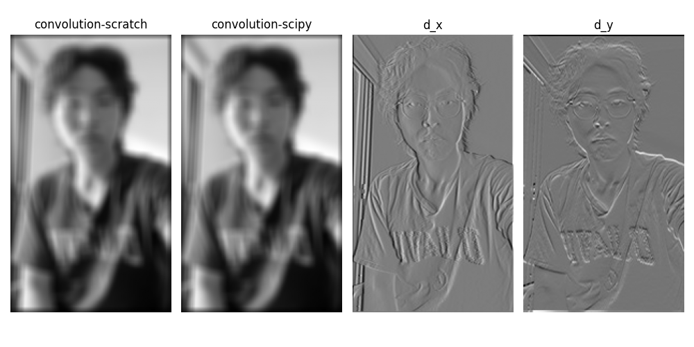
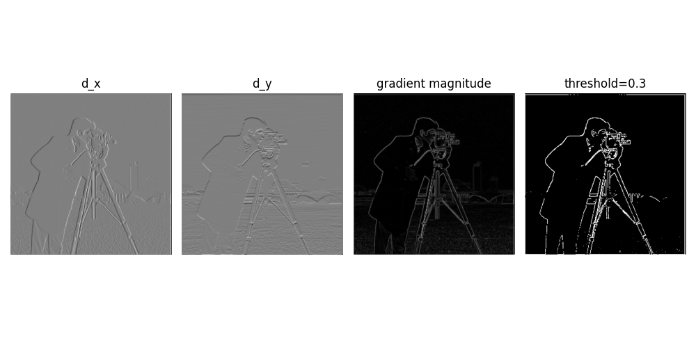
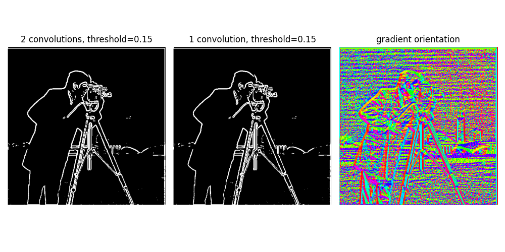
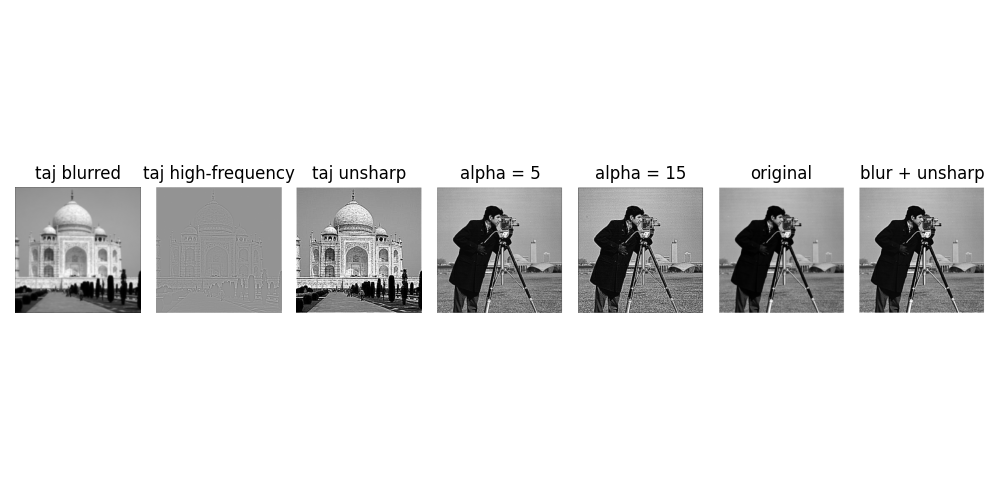
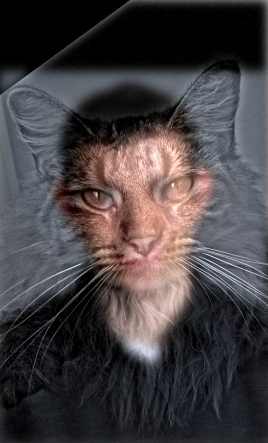
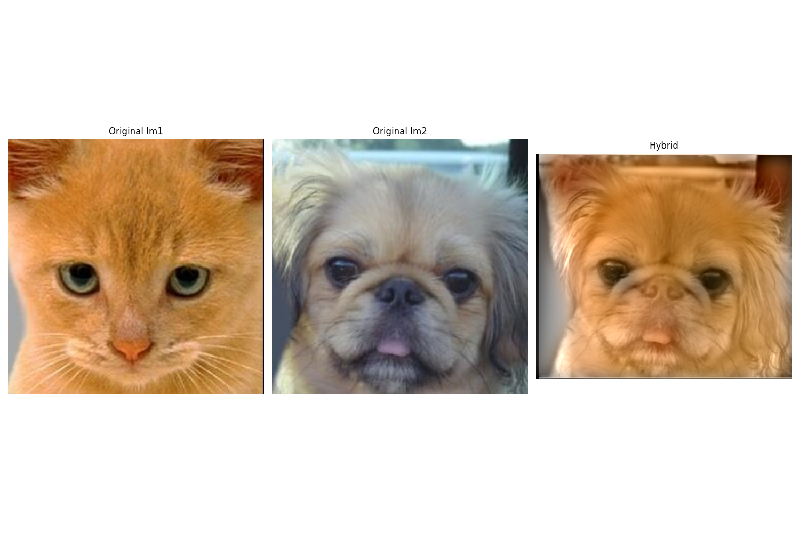
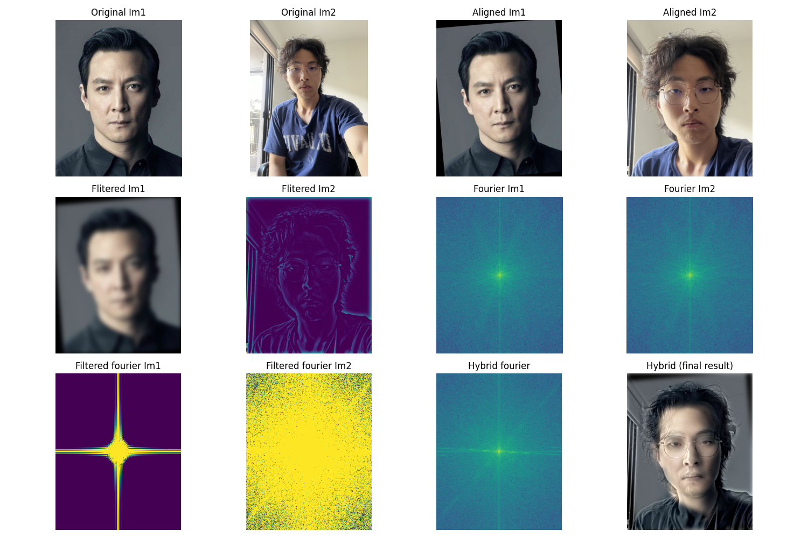
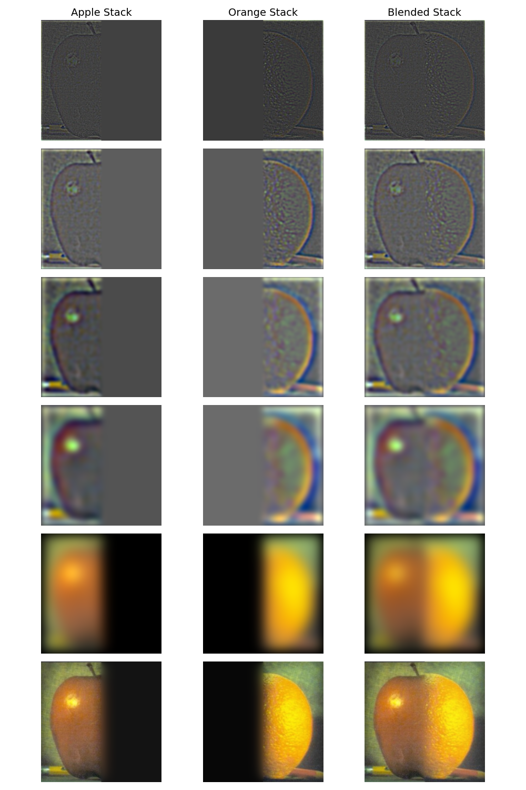
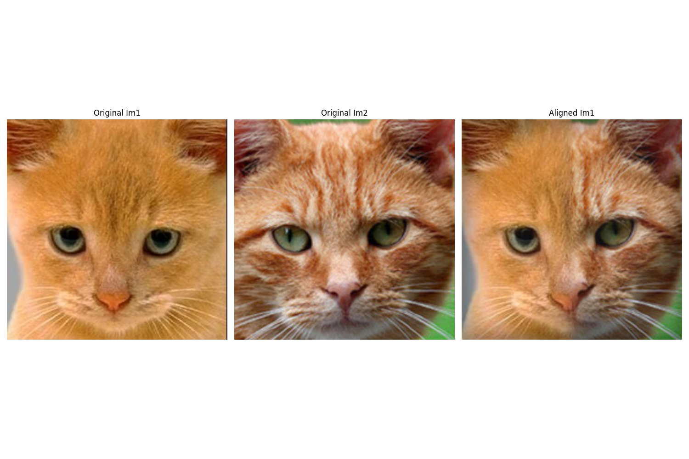

Part 1: Filters and Edges
1.1: Convolutions from Scratch
I implemented 2D convolution with NumPy using zero-padding from first principles. When compared with scipy.signal.convolve2d, my implementation performs equally well with nearly identical runtime. The UC Davis logo on my shirt reminds me: GO AGGIES... and bears! 🐻
Convolution Implementation

1.2: Finite Difference Operator
Here I computed partial derivatives in x and y directions, calculated gradient magnitude, and binarized the edge image using a threshold of 0.3. This threshold proved to be the sweet spot after multiple trials—it retains important edges while suppressing noise artifacts.
Gradient Computation
The gradient is computed as:
$$G = \sqrt{(\frac{\partial I}{\partial x})^2 + (\frac{\partial I}{\partial y})^2}$$where edges are detected by thresholding this gradient magnitude.

1.3: Derivative of Gaussian (DoG) Filter
In this section, I applied Gaussian smoothing combined with derivative filters. Comparing results with the previous part, we can immediately see that noise is significantly suppressed—the spurious dots at the bottom disappeared—making real edges much more prominent. Using a single convolution with a pre-computed derivative-of-Gaussian kernel instead of two sequential convolutions yields identical results, proving that convolution is associative.
Bells & Whistles: Gradient Orientation
I calculated the gradient orientation by computing the arctangent of d_y/d_x with proper normalization, resulting in a striking visualization of edge directions throughout the image.

Part 2: Frequency Applications
2.1: Image Sharpening (Unsharp Mask)
I implemented the unsharp mask technique for image sharpening. The method works by subtracting a blurred image from the original to extract high-frequency components, then adding these frequencies back to enhance sharpness. This can be efficiently computed with a single convolution using the kernel: unsharp = (1+α)e - αg.
Sharpening Formula
$$I_{sharp} = I_{original} + \alpha(I_{original} - I_{blurred})$$As shown in the results, higher α values produce increasingly sharp images. When the image is pre-blurred, unsharpening produces "softer" results since high-frequency components are already attenuated.

2.2: Hybrid Images
I created three hybrid images by combining low-frequency content from one image with high-frequency details from another. The Fourier transform is displayed for the third example to illustrate how different frequency bands contribute to the final perception.
Bells & Whistles: Color Enhancement
Adding color to the low-frequency component significantly improves the realism of hybrid images. This works because when viewing up close, high-frequency details dominate and color has minimal impact; but when viewing from a distance, color serves as a powerful cue for recognizing the low-frequency image faster and more naturally.



Fun Observation
P.S. Daniel Wu is often called the "Asian version of Brad Pitt" by everyone who sees them together—so this hybrid works perfectly! 😄
2.3: Gaussian and Laplacian Stacks
Here I generated Gaussian and Laplacian stacks (image pyramids) for multiresolution blending. The Oraple stack visualization below shows the progressive levels, with the final blended result at the bottom.
Stack Construction
Gaussian Stack: Successive Gaussian blurring at multiple scales
Laplacian Stack: Difference between consecutive Gaussian levels, capturing band-pass filtered content

2.4: Multiresolution Blending (Oraple)
I blended two additional images using Laplacian stacks and a Gaussian blending mask. The second example demonstrates blending with an irregular mask, showing the flexibility of the technique.
Bells & Whistles: RGB Color Blending
Adding color to each blended image significantly improves the result, especially when the source images have similar colors. Color makes the blended result appear much more natural and cohesive compared to grayscale versions.
